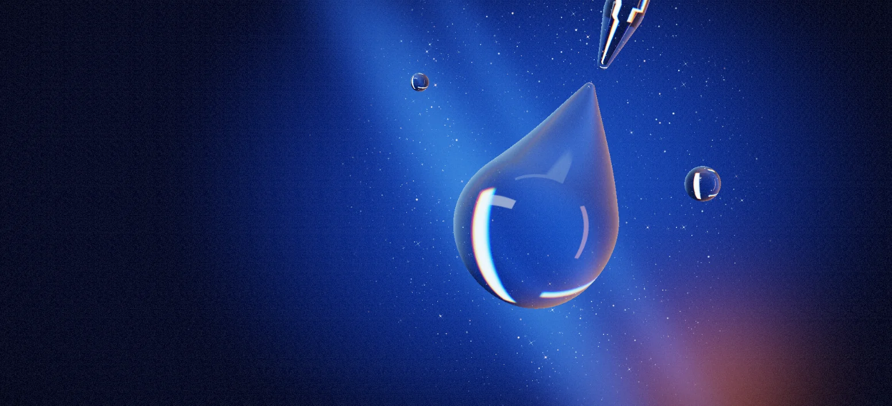

Proposta 10 · Blu profondo
Una homepage costruita come una campagna beauty: un solo oggetto protagonista, luce da studio, titoli sottili. Il riferimento è VAEL, segnalato nella raccolta «Hero Section of the week» di Averlo. La proposta lo traduce per un’associazione di imprese.

Riferimento
Calore
Movimento
Colore
#050A22Fondo principale, testo bianco#1F59A1Il blu del marchio: aloni e ombre colorate#6A9BFFPunti, bagliori e messa a fuoco su scurorgba(255,255,255,.6)Numeri, etichette e date secondarie su scuro#0A1230Testo dei pulsanti e delle etichette bianchergba(255,255,255,.13)Filetti tra le righe di notizie, agenda e circolarirgba(255,255,255,.76)Testi secondari su scuro#F4B48CSolo nella luce: mai su testi o pulsantiContrasti calcolati con la formula WCAG 2.2: tutti i testi superano il livello AA (4,5:1).
Tipografia
Dove la bellezza italiana diventa impresa
Geist Mono · etichette, date e fonti
Le soglie concordate sono rispettate: 16 px per il testo da leggere, 12 px per tutto il resto.
Qualità
Comune a tutte le proposte: logo ufficiale nelle proporzioni originali, contenuti di esempio dal sito pubblico al 17/11/2026, ricerca e area riservata dimostrative.